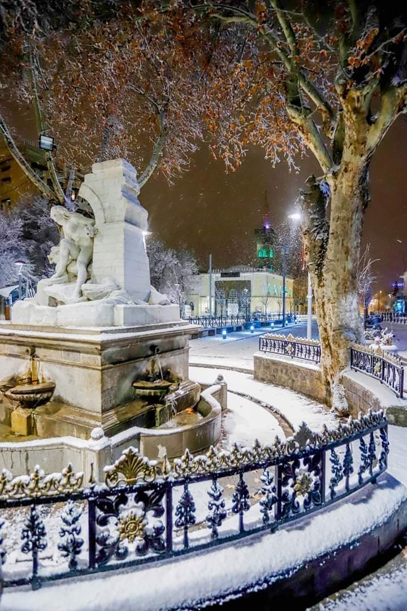
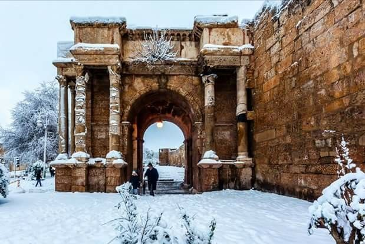

Annaba possède une riche histoire remontant à l'antiquité. Elle était connue sous le nom d'Hippone à l'époque romaine et a été une colonie importante de l'Empire romain. Des vestiges romains sont encore visibles aujourd'hui, notamment les ruines de l'amphithéâtre et de la basilique de Saint Augustin, l'un des sites touristiques les plus populaires de la ville. La ville est également connue pour ses belles plages, notamment la plage de Seraïdi et la plage de Chetaïbi, qui attirent les habitants et les touristes en été..
Sétif est une ville historique qui remonte à l'époque romaine, elle est caractérisée par un mélange d'architecture moderne et traditionnelle. On peut y trouver des bâtiments anciens datant de l'époque coloniale française, ainsi que des constructions plus récentes. Les rues de la ville sont animées, avec de nombreux commerces, restaurants, cafés et marchés.
La ville est renommée pour son histoire riche et sa culture diversifiée. Fondée à l'origine par les Phéniciens, elle a été successivement habitée par les Carthaginois, les Romains, les Vandales et les Byzantins avant de devenir une importante cité musulmane au 7e siècle. En raison de cette histoire mouvementée, Constantine regorge de vestiges et de sites historiques fascinants, notamment la Casbah, une vieille ville fortifiée qui abrite des mosquées anciennes, des palais et des ruelles pittoresques. Le cœur de la ville est dominé par le célèbre Pont Sidi M'Cid, un pont suspendu emblématique qui offre une vue panoramique imprenable sur les gorges de l'oued Rhummel.
Tébessa est célèbre pour son patrimoine romain. Elle était autrefois une ville romaine prospère connue sous le nom de "Theveste". De nombreux vestiges de cette époque ont été préservés, notamment l'amphithéâtre, les thermes et les ruines de temples romains. Ces sites historiques attirent de nombreux visiteurs intéressés par l'histoire et l'architecture romaines.
